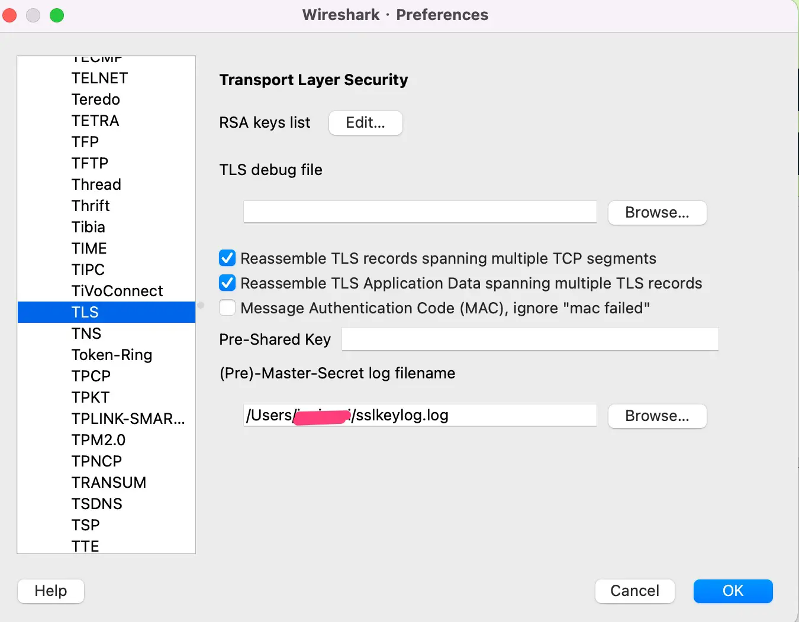
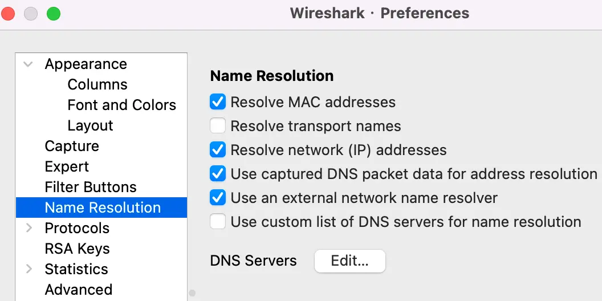
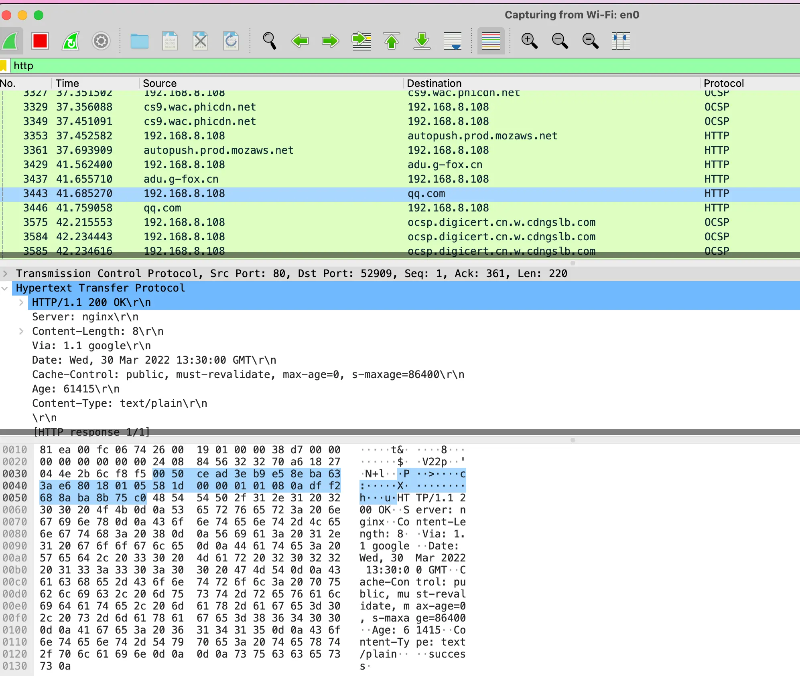
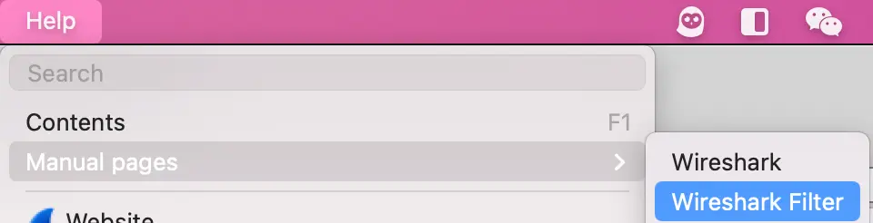

Wireshark
抓https,http2包
- 配置firefox
#设置环境变量,让firefox编入通讯密钥,调试完成后记得删除这个环境变量,它会影响速度和浪费空间
export SSLKEYLOGFILE=~/sslkeylog.log
#命令行启动,让firefox继承环境变量,也防止firefox后台运行,没有真正重启
/Applications/Firefox.app/Contents/MacOS/firefox-bin-
配置wireshark
-
设置通讯密钥文件位置

-
设置显示域名，默认显ip

-
-
firefox访问网址，wireshark抓包

显示过滤语法

# 获取指定port包
tcp.port == 8411
tcp.port in {80, 443, 8080}
# 指定ip源或目的
ip.src == 192.168.0.1
ip.dst == 192.168.0.1
# 按长度
http.content_length <=20
udp.length < 30
# 按协议
http
http contains "https://www.wireshark.org"
http.request.method == "POST"
http.request.method in {"HEAD", "GET"}
# 条件组合 and or
ip.src == 192.168.0.1 or ip.dst == 192.168.0.1
ip.dst eq www.mit.educapture过滤语法
- 表达式规则
[not] primitive [and|or [not] primitive ...]-
primitive有几种形式
- [src|dst] host
- ether [src|dst] host
- gateway host
- [src|dst] net [{mask }|{len }]
- [tcp|udp] [src|dst] port
- less|greater
- ip|ether proto
- relop
-
示例
tcp port 23 and not src host 10.0.0.5小知识
- 局域网抓包可采用路由器镜像端口
- 远程服务器抓包，远程抓包+rpcap,本机wireshark连接远程rpcap,则远程数据包转发到本机
- wireshark支持lua扩展解释自定义协议
Wireshark 更新
Wireshark 4.2+ 支持 HTTP/3(QUIC) 解析，改进了 TLS 1.3 解密。
2026 现状：4.6 稳定分支
截至 2026 年 8 月，Wireshark 当前稳定分支为 4.6：4.6.0 于 2025 年 10 月 8 日发布，2026 年维护版持续迭代（4.6.5 于 2026-04-30 发布，4.6.7 修复 12 项安全漏洞，4.6.8 随后的月度维护版陆续放出）；旧分支 4.4 仍在维护（4.4.18/4.4.19），下一大版本 5.0 正在 4.7 开发分支上酝酿（含 macOS 专用分析器 Stratoshark）。4.6 分支值得关注的变化：
- HTTP/3(QUIC) 解析持续增强，4.6.2 修复了 HTTP3 解析器在特定数据下的崩溃问题，抓 QUIC 流更稳；
- macOS 版可直接解析 tcpdump 提供的进程信息、数据包元数据、流 ID 与丢包信息，并改为通用安装包（不再区分 arm64 与 Intel）；
- Windows 安装包附带 Npcap 1.83 与 Qt 6.9，实时流量捕获加入了数据压缩，处理大流量时性能更好。
TLS 1.3 与 HTTP/3 解密实战
TLS 1.3 使用前向保密，无法像 TLS 1.2 那样拿私钥离线解密，标准做法是让客户端导出会话密钥：设置环境变量 SSLKEYLOGFILE（Chrome/Firefox/curl 等均支持），再在 Wireshark 偏好设置 → Protocols → TLS → (Pre)-Master-Secret log filename 指到同一文件。Go 程序可在 tls.Config 里挂 KeyLogWriter 导出：
f, _ := os.OpenFile("/tmp/keys.log", os.O_APPEND|os.O_CREATE|os.O_WRONLY, 0600)
conn, err := tls.Dial("tcp", addr, &tls.Config{
ServerName: host,
KeyLogWriter: f,
})HTTP/3 走 QUIC，原理相同：抓包后同样用 keylog 文件解密。终端场景用 tshark 即可：
# 只留解密的 HTTP/3 请求行
tshark -r capture.pcapng -o "tls.keylog_file:/tmp/keys.log" -Y "http3"注意 keylog 文件包含会话密钥，属敏感数据，用后即删，避免泄露到日志或备份里。